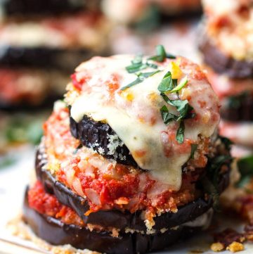

Grilled Eggplant Parmesan

Description
Cheesy grilled eggplant sits on top of a bed of smoky grilled tomato sauce for an eggplant Parm like no other.
Ingridients
- 2 (1 pound) eggplants, sliced into 1/2-inch rounds
- 7 tablespoons extra virgin-olive oil, divided
- 3 tablespoons lemon juice
- 1 teaspoon salt, divided
- 1 shallot, halved
- 2 (10 ounce) baskets cherry tomatoes
- skewers
- 1 tablespoon balsamic vinegar
- 2 cloves garlic, halved
- ½ teaspoon crushed red chili flakes
- 1 pound fresh mozzarella, cut into thin slices
- 3 tablespoons grated Parmesan cheese
- 6 sprigs fresh basil
Steps
- Place eggplant in a large bowl. Add 4 tablespoons olive oil, lemon juice, and 1/4 teaspoon salt. Stir to combine and let marinade for 20 minutes.
- Preheat an outdoor grill to medium-high heat and lightly oil the grate.
- Thread shallot and tomatoes onto skewers and brush 1 tablespoon of olive oil over them. Grill for 4 minutes. Flip and grill 4 minutes more.
- Transfer grilled tomatoes and shallot to a blender. Add vinegar, garlic, crushed chili flakes, 1/2 teaspoon salt, and remaining 2 tablespoons olive oil. Pulse until blended but still chunky. Set aside.
- Grill eggplant slices for 5 minutes. Flip, and sprinkle the remaining 1/4 teaspoon of salt over them. Top each with a slice of mozzarella and grill until cheese begins to melt, about 2 minutes.
- Spoon tomato mixture on a serving platter. Top with eggplant. Sprinkle grated Parmesan cheese over the top and garnish with fresh basil.